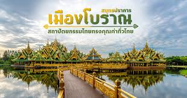

ยินดีต้อนรับสู่ Dreamland
สัมผัสกับธรรมชาติและวัฒนธรรมที่ไม่เหมือนใคร
ประวัติสถานที่
1. สถานตากอาศอาศบางปู
 ู
ู
สถานตากอากาศบางปู จัดตั้งขึ้นในปี พ.ศ. 2480 โดยจอมพลป.พิบูลสงคราม นายกรัฐมนตรีในสมัยนั้น
ดำริให้สร้างเป็นสถานที่พักผ่อนของประชาชนทั่วไปเนื่องด้วยติดทะเลและไม่ไกลจากกรุงเทพฯ มีการสร้างสะพานยื่นออกไปในทะเล
2. พิพิธภัณฑ์ช้างเอราวัณ

ช้างเอราวัณเป็นช้างที่มีขนาดใหญ่มาก ผิวกายสีขาว มีหัว ๓๓ หัว แต่ละหัว มีงาเจ็ดงา แต่ละอันยาวสี่ล้านวา
แต่ละงามีสระโบกขรณีเจ็ดสระ แต่ละสระมีกอบัวเจ็ดกอ แต่ละกอมีดอกบัวเจ็ดดอก แต่ละดอกมีกลีบเจ็ดกลีบ แต่ละกลีบมีธิดาฟ้อนรำอยู่เจ็ดองค์
3. หอชมเมืองสมุทรปราการ

หอชมเมืองสมุทรปราการ สร้างขึ้นบนเนื้อที่ 13 ไร่ อาคารสูงประมาณ 179 เมตร เป็นแหล่งเรียนรู้โดยตั้งชื่อเป็น อุทยานการเรียนรู้อ่าวไทย ที่จะเป็นศูนย์กลางข้อมูลเกี่ยวกับจังหวัดในทุกๆ ด้าน และจะเป็นแหล่งท่องเที่ยวใหม่ที่จะเปิดให้ประชาชนทั่วไปได้เข้าชม ภายในอาคารประกอบด้วยส่วนนิทรรศการ เกี่ยวกับเมืองสมุทรปราการทั้งหมด บนสุดเป็นหอคอย เป็นจุดสำหรับชมวิวเมืองมองเห็นแม่น้ำเจ้าพระยาไปจนถึงทะเลปากอ่าวไทยพระสมุทรเจดีย์ป้อมผีเสื้อสมุทรพื้นที่สีเขียวของบางกะเจ้า ป้อมพระจุลจอมเกล้า และ พิพิธภัณฑ์ช้างเอราวัณ
4. เมืองโบราณ สมุทรปราการ

เมืองโบราณ ก่อตั้งขึ้นด้วยความตั้งใจและความอุตสาหะวิริยะ ของคุณเล็ก วิริยะพันธุ์
นักธุรกิจผู้มีใจรักในศิลปวัฒนธรรม เมืองโบราณเป็นพิพิธภัณฑ์กลางแจ้งระดับโลกบนพื้นที่ 800 ไร่ เริ่มก่อสร้างในปี 2506
5. วัดอโศการาม